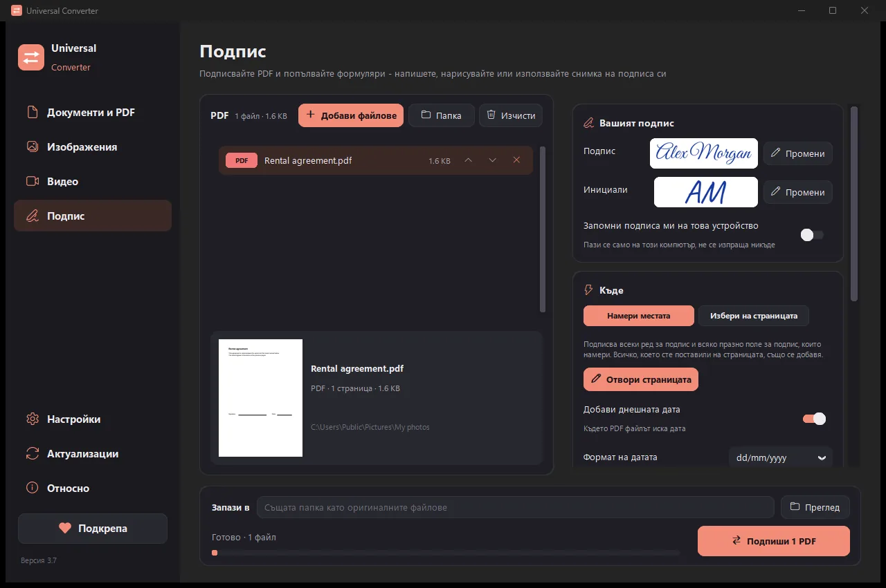

Подпишете PDF
Създайте подписа си веднъж: напишете името си и изберете стил, нарисувайте го с мишката или с пръст, или използвайте снимка му на хартия. Universal Converter намира редовете за подпис и празните полета за подпис, или щраквате или докосвате страницата там, където трябва да е. Запазва подписано копие и оставя оригинала какъвто е. Това е видим електронен подпис, а не цифров подпис, базиран на сертификат.
Как се инсталира и актуализира
- Отворете изтегления .dmg файл и плъзнете Universal Converter в „Програми“.
- Отворете приложението. Първия път macOS го блокира, защото не е подписано от Apple: щракнете „Готово“.
- Отворете „Системни настройки“ > „Поверителност и сигурност“, превъртете надолу, щракнете „Отвори въпреки това“ и въведете паролата си. Правите това само веднъж.
Актуализации: ако разрешите при първото отваряне на приложението, то търси нови версии при всяко стартиране, проверява цифровия им подпис и ги инсталира, когато изберете.
Как се инсталира и актуализира
- Докоснете „Изтегляне за Android“ на телефона си.
- Отворете изтегления файл. Ако Android попита, разрешете на браузъра или файловия мениджър да инсталира приложения.
- Докоснете „Инсталиране“.
Актуализации: приложението проверява около веднъж на ден и ви казва, когато има готова нова версия. Изтеглете я по същия начин и я инсталирайте върху старата; настройките ви се запазват.
Как се инсталира и актуализира
- Изтеглете файла .AppImage.
- Направете го изпълним: щракнете с десния бутон, отворете Свойства > Права и разрешете стартиране като програма (или в терминал: chmod +x Universal-Converter-*.AppImage).
- Щракнете два пъти върху него. Нищо не се инсталира: приложението е този един файл.
Актуализации: ако разрешите при първото отваряне, приложението при всяко стартиране търси нови версии, проверява цифровия им подпис и заменя файла AppImage там, където се намира.
Как се прави
- Отворете Universal Converter и изберете Подпис вляво.
- Плъзнете файловете си или цяла папка в прозореца или щракнете Добави файлове.
- Щракнете „Промени“ до „Подпис“, за да създадете подписа си, след това изберете „Намери местата“ или „Избери на страницата“ и щракнете там, където трябва да е.
- Щракнете „Подпиши“. Всеки файл се записва като име_signed.pdf до оригинала или в папката, която изберете.

Защо офлайн?
Universal Converter върши работата на собственото ви устройство. Файловете ви остават лични, големите файлове не са проблем и всичко работи без интернет връзка.
Какво още може
- Преобразувайте PDF в Word
- Преобразувайте документи на Word в PDF
- Обединете няколко файла в един PDF
- Компресирайте PDF до размер, който изберете
- Компресирайте PDF до 100 KB, 200 KB или какъвто и да е размер за онлайн формуляри
- Преобразувайте страници от PDF в изображения JPG
- Превърнете сканиран документ в редактируем файл на Word
- Преобразувайте изображения между JPG, PNG, WEBP и други
- Преоразмерете изображения или ги намалете до размер на файла
- Преоразмерете снимка или подпис до 20 KB, 50 KB или точни пиксели
- Обединете снимки в един PDF
- JPG в PDF под 100 KB
- Копирайте текста от изображение (OCR)
- Компресирайте видео, без да го качвате
- Преобразувайте видео между MP4, MKV, WebM, MOV и AVI
- Запазете звука от видео като MP3
- Направете GIF от видео
- Пренесете таблици от PDF в Excel
- Преобразувайте банково извлечение в PDF в Excel
- Извлечете таблици от фактури в PDF в Excel
- Попълнете PDF формуляр